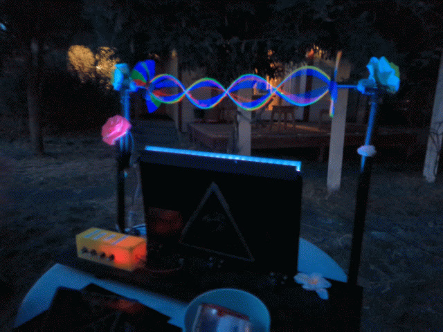
String Thing
“String Thing” is a kinetic sculpture that is, at its heart, simply a spinning string and flashing lights. The magic here, as always, is in the details. When a flashing light is timed to flash at an interval very close to the rotational speed of an object, our human eyes can be tricked into thinking that the object is actually standing still, moving very slowly, or even moving backwards.
String Thing utilizes this “persistence of vision” illusion to make the user believe a multicolored oval, or several ovals, are hovering in the air in front of them. The user is also invited to touch and play with the string, which induces all sorts of fun and chaotic dynamics into the system, making it a rainbow one can play with and bend with just their fingers. Part science experiment, part performance piece, String Thing invites viewers to explore the hidden rhythms in everyday motion, merging physics, engineering, and whimsy into a single, hypnotic experience.
String Thing was originally developed as a showcase piece for Fidget Camp 2024, and was iterated and improved upon for future installations at various art festivals in the following years.
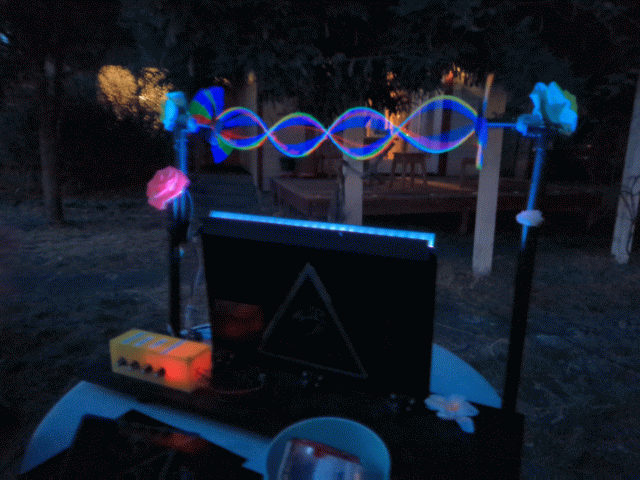
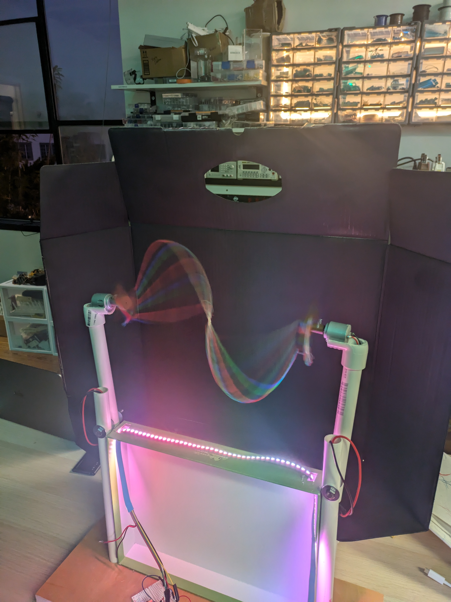
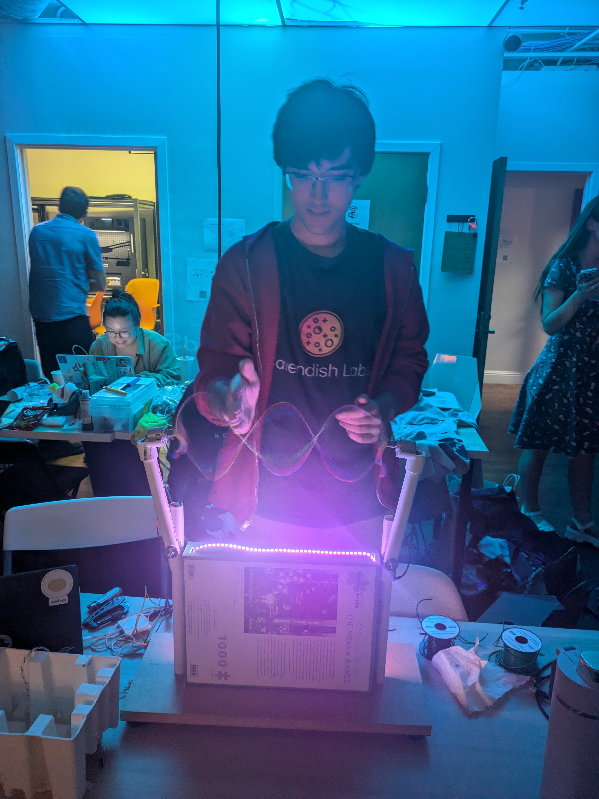
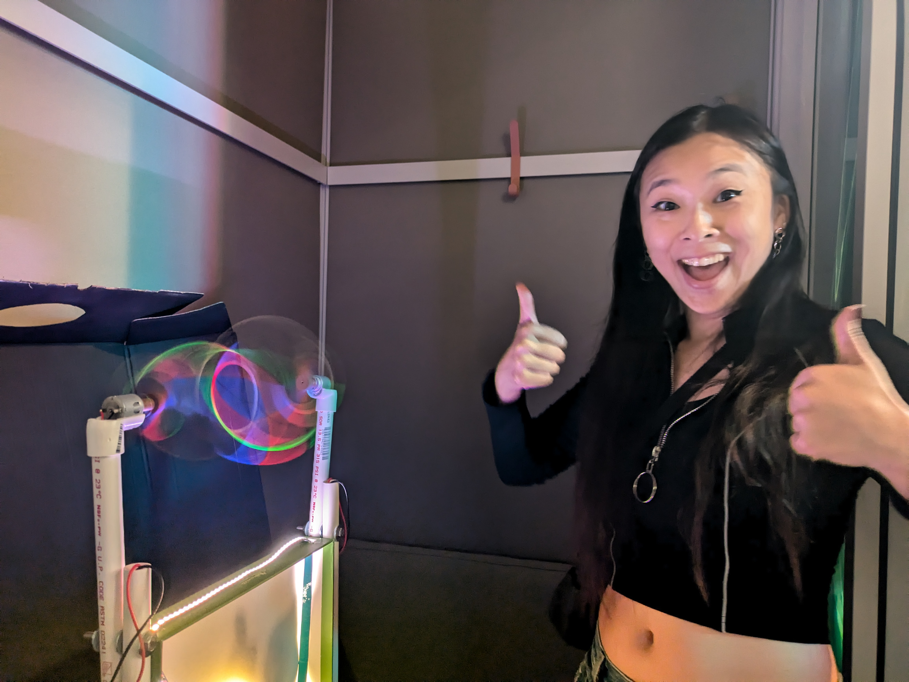
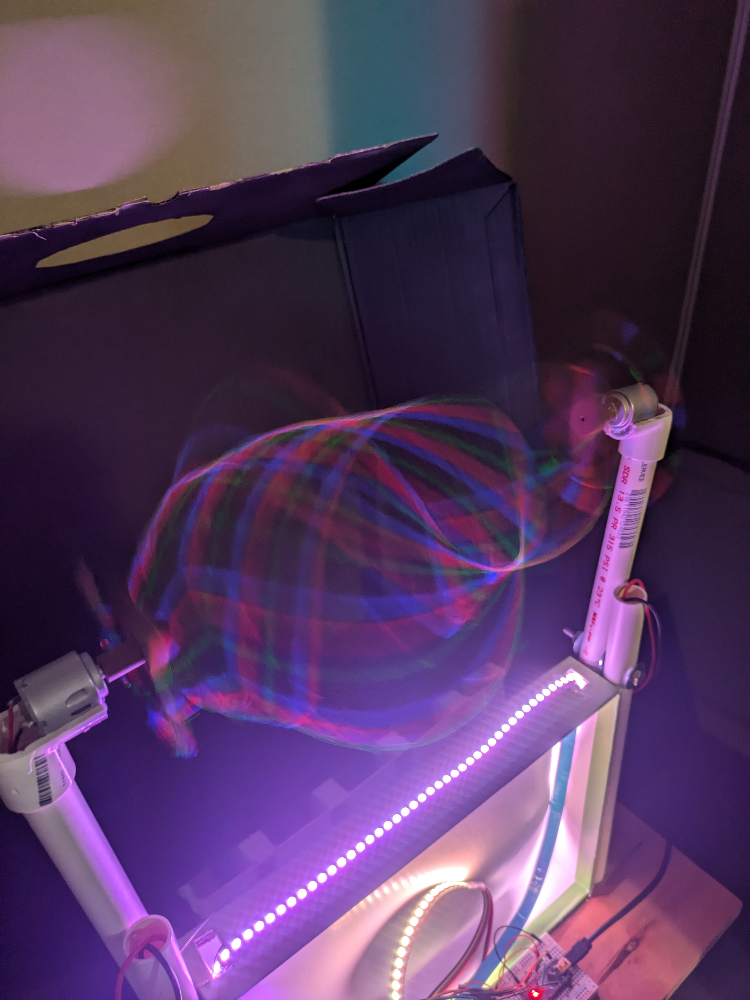
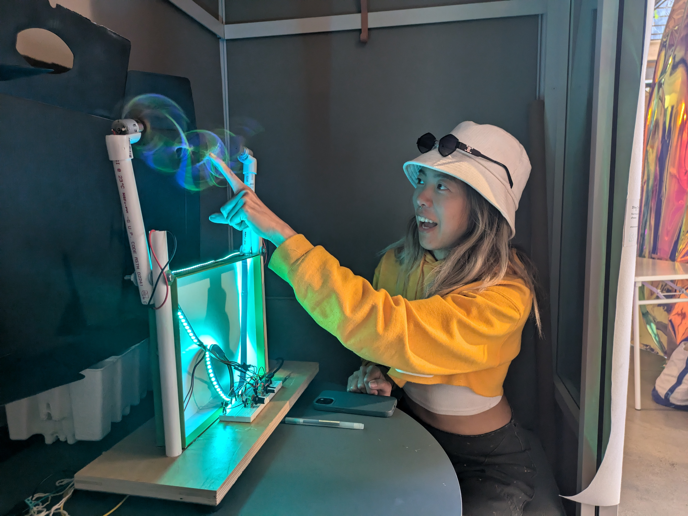
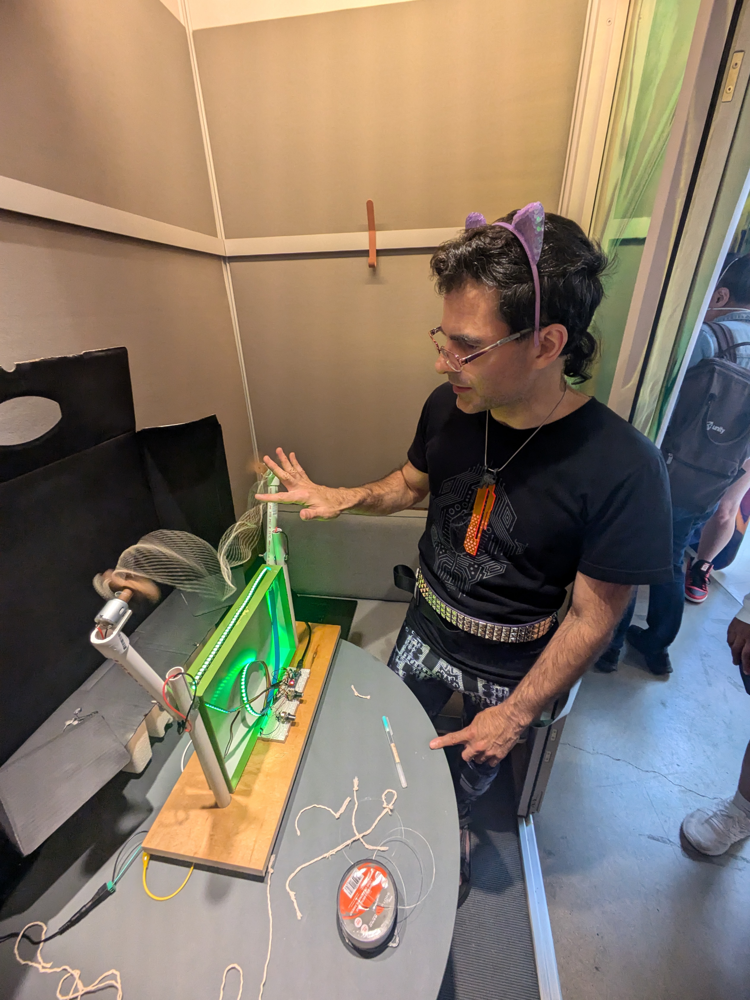
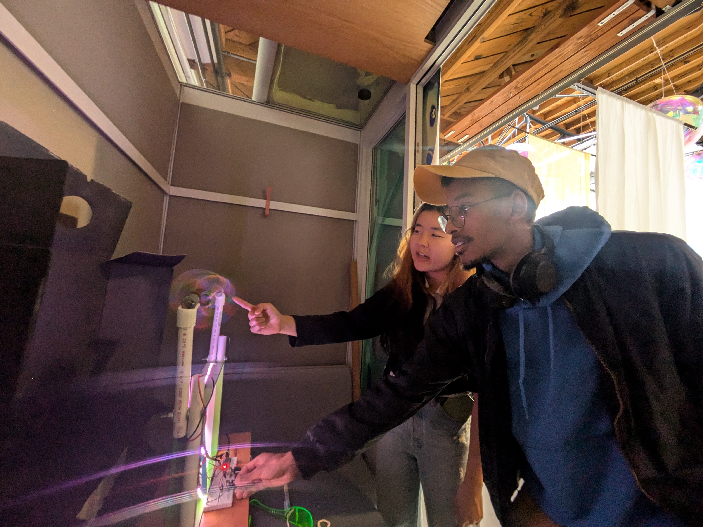
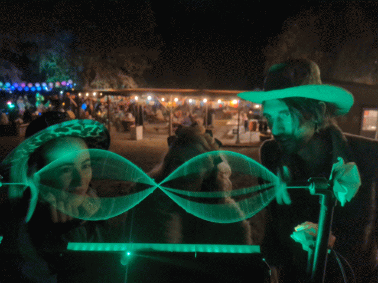
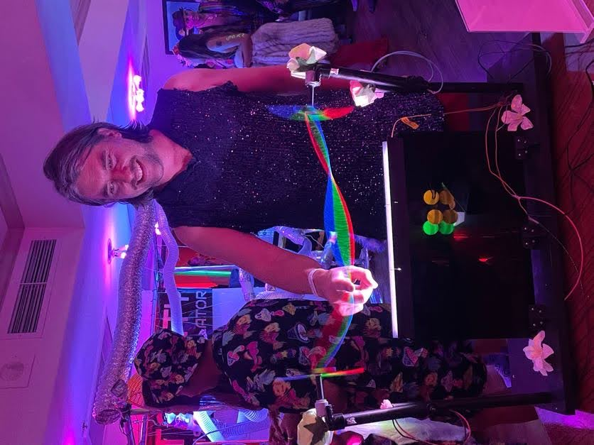